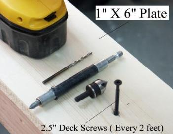
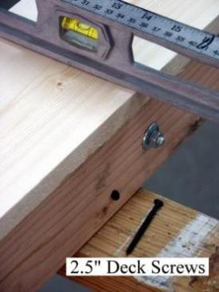
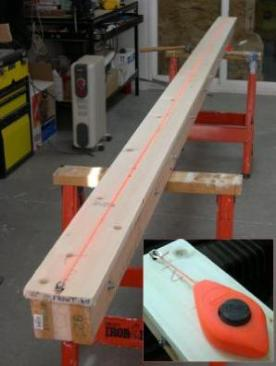

| Strongback - Top Plate | Menu Previous Page Next Page | |
|

4. Attach the 1x6 Deck plate (13ft) with 2.5" deck screws
every two feet. Use a 6' and 7' section for the plate.
|

5. After attaching the plate, level up the strongback at the sawhorses with shims (if needed). Attach the strongback to the sawhorses with 2.5" deck screws. (4 required) |

6. "Snap" a chalkline down the center of the strongback. This line will be used to align the stations.
|